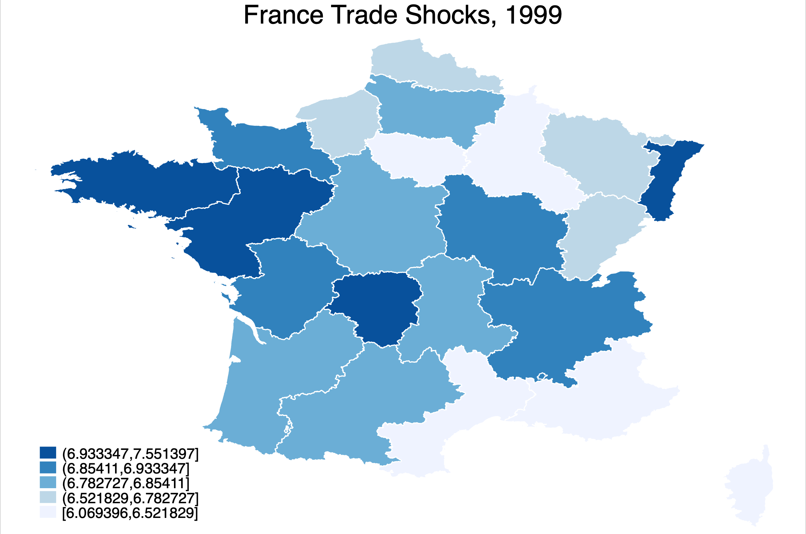
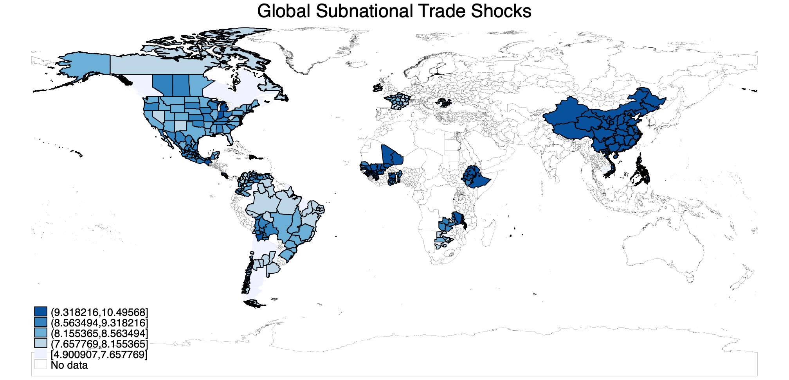

As part of my research activities, I have spent significant effort analyzing and collecting data from various historical and survey sources. Here you can find some of the products of those endeavors.
1. American Copyright Registrations and Authors’ 1850 County Residences
This interactive map explores the geography of early American copyright registrations. I link copyright title-page records to likely 1850 census county residences of the people associated with those registrations. The map allows users to browse total registrations, registrations per capita, and estimated topic categories derived from title-page text. A companion time-series view shows the long-run growth of book registrations, both in total counts and normalized by population.
Code: Website repository
2. Product by Firm Data: The Thomas Register in 1905
This dataset digitizes the 1905 edition of the Thomas Register, one of the central directories of American industrial firms, suppliers, and product categories. I extract product-by-firm level data for the year 1905 from the scanned PDF of the Thomas Register, a popular buyer's guide featuring major and minor manufacturing firms in the United States producing over 2,900 products across more than 75,000 firms. Below I show two exploratory views of the data: the distribution of listings across U.S. cities, and a city-product specialization matrix that highlights which cities appear unusually concentrated in particular product categories.
Code: Website repository
3. Trade Shocks and Regional Exposure, 1970–2020
This dataset measures country-region-year level trade shocks using IPUMS International microdata covering 31 countries and 40 years over 1970–2020. I calculate regional exposure to changing trade patterns by matching individuals in IPUMS International microdata to the SITC4 products most associated with their industry. This involves creating a crosswalk between over 10,000 industry descriptions in the raw IPUMS files and SITC4 codes using the ChatGPT API. The resulting crosswalk is available upon request. To calculate the shocks, I weight changes in global imports of SITC4 products between 1975–1990 and 1990–2000 by regional shares of employment. Trade data is from Robert Feenstra's website. Below I show the resulting distribution of shocks for one country, France, in a single year, 1999. Geo level 2 datasets are available upon request.

